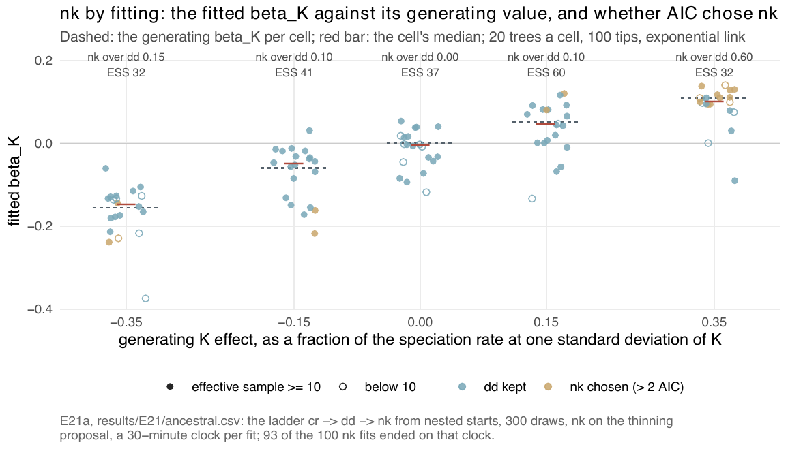
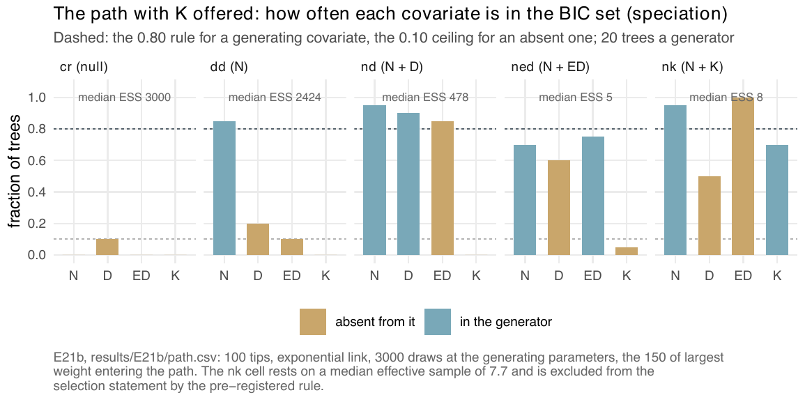

E21 — Is the ancestral-splits coefficient recovered, by fitting (E21a) and on the path (E21b)?
| Status | complete (E21a and E21b). E21a is clock-limited (93 of 100 nk fits ended on the clock); E21b's nk cell is sampler-limited |
| Package build | not recorded; \(K\) entered the package as of emphasis 0.4 |
| Driver / analysis | E21a sim/E21-ancestral.R; E21b sim/E20-path.R with --covariates N,D,ED,K; figures sim/figures-supplement.R |
| Data | results/E21/ancestral.csv (E21a, 100 rows, all ok); results/E21b/path.csv (E21b, 100 rows); results/E21b/design.rds |
Question
The covariate-space measurement (sim/covariates-space.R) found an axis the package did not read: \(K_s(t)\), the number of speciation events on the path from the crown to lineage \(s\), hidden splits counted, constant between events and one more on both daughters at a split. Its rank correlation with every covariate offered was at most 0.29 in magnitude on dd clades. It became a package covariate (models k and nk, formula term K):
\[\lambda_s(t) = \exp\big(\beta_0 + \beta_N N(t) + \beta_K K_s(t)\big),\]
with \(\mu\) carrying \(\gamma_K\) likewise. Under the exponential link a positive \(\beta_K\) says a lineage whose ancestry has speciated often speciates more, the observable trace of an inherited rate. The simulator carries \(K\) per lineage, the per-lineage likelihood reads it through the table path ED takes, the thinning proposal reads it, and the surrogate proposal refuses it (its mean field does not carry \(K\)). E21 asks whether \(\beta_K\) comes back by fitting (E21a) and whether the path of E20 admits \(K\) where it is and only there (E21b).
Design
E21a (fitting).
| Parameter | Value | Meaning |
|---|---|---|
| generator | nk, exponential link |
ancestral splits with an \(N\) term |
| tips | 100 target; trees 61-123 (median 75) at -0.35, 67-151 elsewhere | capacity recalibrated per cell |
| turnover / crown | 0.10 / 15 | |
| \(K\) scale | sd(K) = 2.72-2.77 splits | spread of the alive lineages' split count at the present in dd clades of 100 tips |
| effects | 0, ±0.15, ±0.35 | \(\beta_K = \log(1 + e)/\mathrm{sd}(K)\): -0.156, -0.059, 0, +0.051, +0.109 per split |
| trees per cell | 20 | |
| fit | ladder cr → dd → nk, each started from the estimate of the model it nests, new coefficients at zero |
cr, dd on the surrogate; nk on thinning |
draws / max_iter / clock |
300 / 100 / 30 minutes per fit | |
| box | sim/box.R, exponential link, \(K\) slots scaled by the observed spread of tip depth |
The nested start and 300 draws replace E19's setting (box midpoint, 600 draws) after a measurement on a 99-tip nk tree: from the midpoint one nk iteration at 600 draws took over 20 minutes and the surrogate dd fit had an effective sample of 1 to 3 of 600. The -0.35 cell's capacity sits at the calibration's ceiling: the negative \(K\) effect caps the clade near 60 tips whatever the capacity. results/E21/failed-linear-box/ holds six job files of an earlier attempt; the record says nothing more about it than its name.
E21b (path). E20 with \(K\) offered to the path and an nk generator beside cr, dd, nd, ned: all under the exponential link at 100 tips, turnover 0.10, crown 15; nd and ned at \(\log 0.65\) per scale unit, nk at \(+0.43\) per scale unit of \(K\) (\(\beta_K = +0.154\) per split at a \(K\) scale of 2.8). 20 trees a generator (70-140 tips for nk), 3000 draws at the generating parameters, the 150 of largest weight entering one dgLARS path over \(N, D, \mathrm{ED}, K\) for each rate; BIC picks the set. nk draws come from the thinning proposal, the only one that admits \(K\); nd draws now from the surrogate. The cr and dd rows are E20's trees and draws.
Pre-set rule
E21a. The E19 rule on \(\beta_K\): at \(|e| = 0.35\), median \(\hat\beta_K/\beta_K \in [0.75, 1.25]\), the right sign on \(\ge 80\%\), nk over dd by \(> 2\) AIC on \(\ge 80\%\); false positives \(\le 5\%\) at zero; cells with median nk effective sample below 10 reported and excluded from the selection statement.
E21b. The E20 rule (the BIC set equals the generating set on \(\ge 80\%\) of trees per generator; an absent covariate included on \(\le 10\%\); no extinction covariate on \(> 10\%\)), plus: \(K\) in the BIC set on \(\ge 80\%\) of nk trees and on \(\le 10\%\) of trees from every other generator, for the speciation rate; cells with median effective sample below 10 excluded from the selection statement.
Results
E21a.
| effect | ratio (q1-q3) | sign | ESS | < 10 | nk over dd by > 2 |
median AIC(dd) - AIC(nk) | nk stops conv / cap / clock |
\(\hat\gamma_K\) median (gen 0) |
|---|---|---|---|---|---|---|---|---|
| -0.35 | 0.95 (0.82-1.21) | 1.00 | 32.3 | 6 | 0.15 | -1.8 | 0 / 1 / 19 | -0.076 |
| -0.15 | 0.83 (0.48-2.30) | 0.95 | 40.8 | 0 | 0.10 | -3.5 | 0 / 1 / 19 | -0.102 |
| 0 | \(\hat\beta_K\) median -0.0048 | — | 36.8 | 6 | FP 0.00 | -3.9 | 0 / 1 / 19 | -0.148 |
| +0.15 | 0.90 (0.02-1.60) | 0.80 | 60.3 | 2 | 0.10 | -2.5 | 1 / 1 / 18 | -0.093 |
| +0.35 | 0.92 (0.83-1.03) | 0.95 | 32.3 | 6 | 0.60 | +4.5 | 1 / 1 / 18 | -0.058 |
ESS of 300 draws. 93 of the 100 nk fits ended on the 30-minute clock, 5 on the cap, 2 converged: every cell is clock-limited, so every selection rate is that of unfinished fits. The dd fits they start from converged on 74 of 100 (ESS 188-260). No cell is sampler-limited.

nk beat dd by more than 2 AIC. The medians (red) sit on the generating values in every cell; only at +0.35 is nk chosen on more than a few trees (0.60).E21b. Share of trees with each covariate in the speciation BIC set, and the generating set chosen exactly:
| generator | ESS | exact set | \(N\) | \(D\) | ED | \(K\) |
|---|---|---|---|---|---|---|
cr |
3000 | 0.90 | 0.00 | 0.10 | 0.00 | 0.00 |
dd |
2424 | 0.55 | 0.85 | 0.20 | 0.10 | 0.00 |
nd |
478 | 0.10 | 0.95 | 0.90 | 0.85 | 0.00 |
ned |
5.4 (16 < 10; s-l) | 0.15 | 0.70 | 0.60 | 0.75 | 0.05 |
nk |
7.7 (11 < 10; s-l) | 0.00 | 0.95 | 0.50 | 1.00 | 0.70 |
On nk trees the chosen sets are \(N + D + \mathrm{ED} + K\) on 9, \(N + \mathrm{ED}\) on 5, \(N + \mathrm{ED} + K\) on 5, \(D + \mathrm{ED}\) on 1; ED is the first covariate to enter on 14 of 20. Where \(K\) is in the set its coefficient is a median 0.150 against the generating 0.154 (0.97 of its value, quartiles 0.64-1.10, right sign on every tree). Nothing enters the extinction path on any tree of any generator.

cr, dd and nd trees and on 1 of 20 ned trees; on nk trees it enters on 0.70, below ED, which enters on every tree. The ned and nk panels rest on median effective samples of 5 and 8.Conclusion
E21a: not met. The recovery half is met on both signs (0.95 and 0.92 at ∓0.35, right sign on 1.00 and 0.95), the false-positive half is met (0.00), and the selection half is not (nk over dd on 0.15 and 0.60 against 0.80). The coefficient is recovered and the likelihood gain does not pay for the two extra parameters on fits stopped at 30 minutes; the asymmetry between +0.35 (0.60) and -0.35 (0.15) goes with the clade's shape, a negative \(K\) effect capping the clade near 60-75 tips. The supplement gives the median AIC difference at -0.15 as 5.5 in favour of dd; results/E21/ancestral.csv gives 3.5. The extinction slope \(\gamma_K\), generated at zero, is fitted at a median -0.06 to -0.15 per split in every cell including the null: on these unfinished fits the extinction side carries a negative \(K\) slope the generator did not have.
E21b: not evaluable for \(K\)'s inclusion; met for \(K\)'s exclusion. The nk cell is sampler-limited (ESS 7.7), so \(K\) on 0.70 of nk trees is reported and excluded. \(K\) is admitted on at most 1 of 20 trees of any other generator, within the 0.10 ceiling, and the extinction path stays empty. The E20 part of the rule fails as it did in E20 (dd exact on 0.55, nd on 0.10, absent covariates on up to 0.85). On nk trees ED enters first and on every tree: a speciation-rich ancestry is a low fair proportion, so on \(K\)-shaped trees ED carries the \(K\) signal with the opposite sign.
Related
- E19 — the recovery rule E21a applies, and the box-midpoint setting it replaced.
- E20 — the path design E21b extends.
- E23 —
nkinside the one-call ladder (7 of 10 at 100 tips). - E24 —
k, the ancestral-splits covariate without an \(N\) term. - E27 —
nkin the ladder across eight conditions. - E22 — the path at 50 to 400 tips.